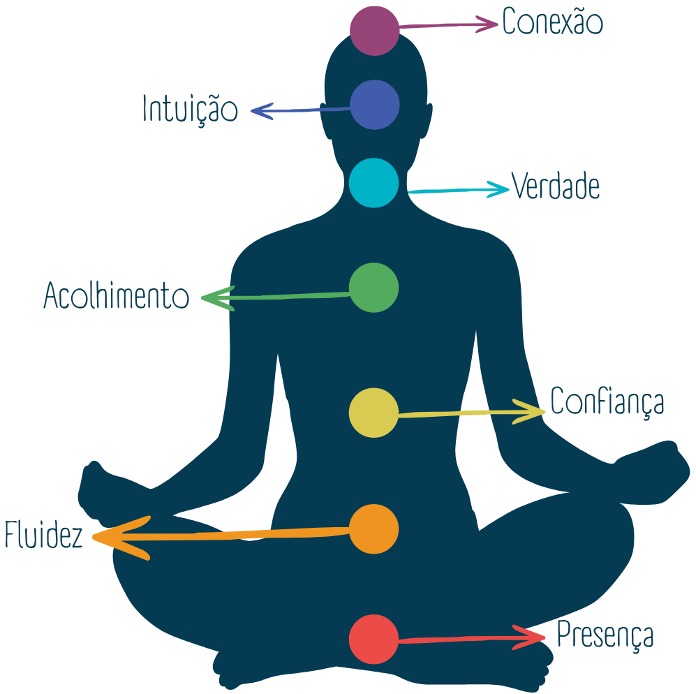

Radiestesia: o pêndulo como mapa do seu campo
Uma prática que funciona como um “biossensor”: como o pêndulo ajuda a mapear o que o seu campo energético está pedindo agora — e o que a radiestesia não é.
Ler artigoExplicações em linguagem simples sobre as práticas por trás do Alinhamento Energético. Novos artigos serão adicionados aos poucos.
Uma prática que funciona como um “biossensor”: como o pêndulo ajuda a mapear o que o seu campo energético está pedindo agora — e o que a radiestesia não é.
Ler artigo
O que significa Reiki, por que a distância não é um obstáculo e como funciona o Reiki à distância assíncrono nas sessões.
Ler artigo
Como se manifesta cada centro de energia quando está equilibrado, bloqueado ou hiperativado, e como eles são lidos em uma sessão de harmonização.
Ler artigo
Ação e descanso como duas forças complementares: como é o equilíbrio e quais são os sinais de excesso de Yin ou de Yang.
Ler artigoMais artigos em breve.